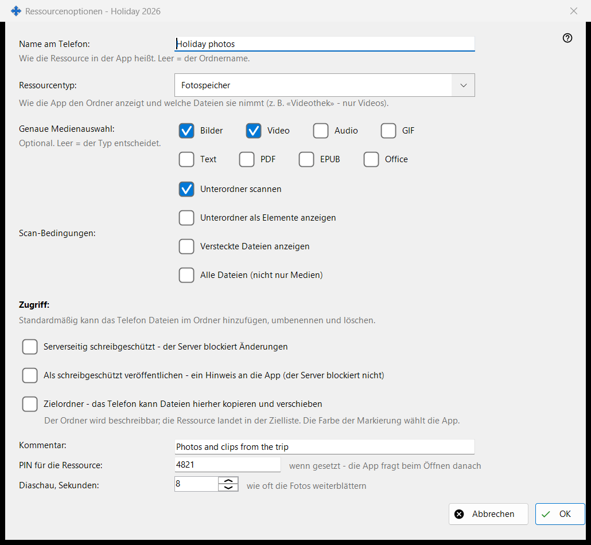
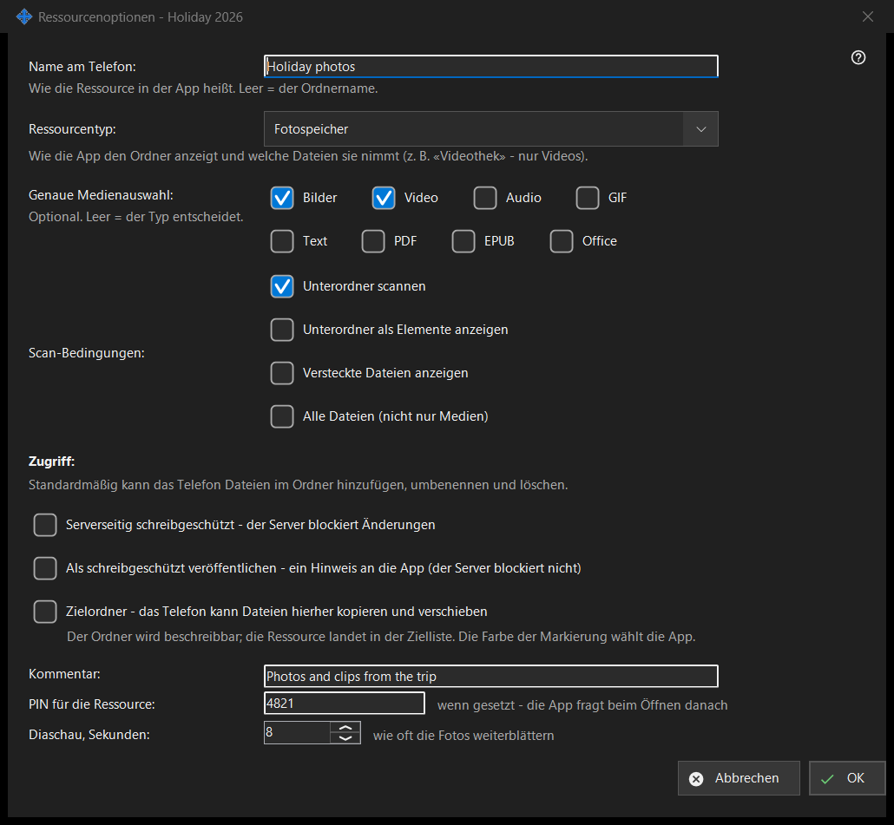

Ressourcenoptionen
Verwendungszweck
Optionen eines freigegebenen Ordners: sein Name auf dem Telefon, der Typ, welche Dateien angezeigt werden, wer sie ändern darf, und einige Extras. Es öffnet sich über «Bearbeiten» im Hauptfenster, aus einer Ordnerzeile und aus dem Ressourcenassistenten. Die tatsächliche Fensterüberschrift endet mit dem Ordnernamen.


In dieser Reihenfolge
- Legen Sie den Namen fest, den das Telefon anzeigt.
- Wählen Sie den Ressourcentyp oder eine genaue Medienauswahl.
- Legen Sie die Scanbedingungen fest.
- Wählen Sie den Zugriff.
- Öffnen Sie «Weitere Optionen» für einen Kommentar, eine PIN und das Diaschau-Intervall.
- Drücken Sie OK.
Die Elemente
Name und Typ
«Name am Telefon:» ist der Name, unter dem der Ordner in der App erscheint; leer bedeutet den Ordnernamen. «Ressourcentyp:» bietet Normaler Ordner, Audiothek, Videothek, Fotospeicher und Dokumente. «Genaue Medienauswahl:» wählt die genauen Arten (Bilder, Video, Audio, Text, Alle Dateien); leer bedeutet, dass der Typ entscheidet.
Scanbedingungen
«Unterordner scannen», «Unterordner als Elemente anzeigen», «Versteckte Dateien anzeigen» und «Alle Dateien (nicht nur Medien)».
Zugriff
Standardmäßig kann das Telefon Dateien im Ordner hinzufügen, umbenennen und löschen. «Schreibgeschützt» ist eine echte Sperre: Der Server verweigert Änderungen. Ein Hinweis auf Schreibschutz weist die App nur an, die Bearbeiten-Schaltflächen auszublenden; der Server blockiert nichts. Ein Zielordner kann Kopien und verschobene Dateien vom Telefon aufnehmen; er wird beschreibbar und kommt in die Empfängerliste, und seine Farbe wählt die App.
Weitere Optionen
Ein Kommentar (optional), eine PIN für die Ressource (die App fragt sie beim Öffnen der Ressource ab) und das Diaschau-Intervall in Sekunden. Die Einstellungen werden beim Bestätigen an den Server gesendet.
Managereinstellungen · SFTP-Freigabeeinstellungen · Einstellungen des Austauschservers